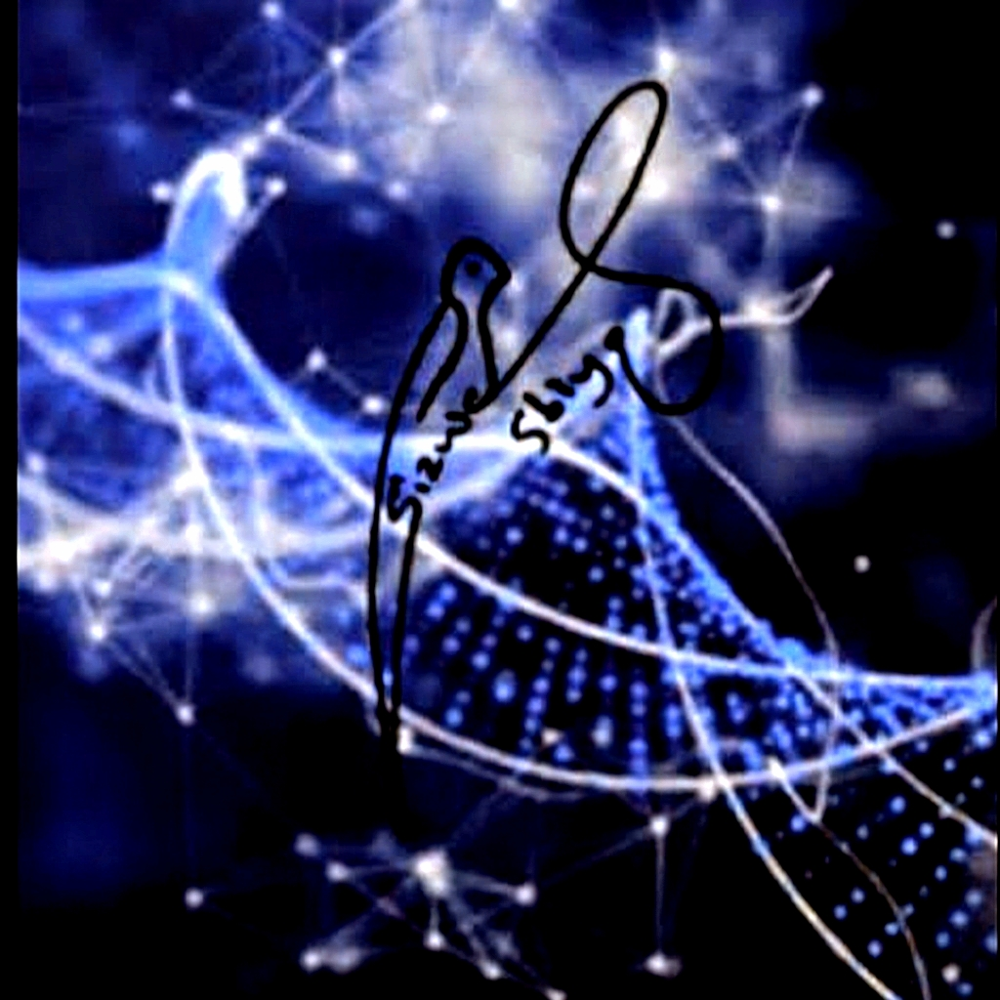

Text a plain question about space — the ISS, solar storms, what's overhead tonight — and get a real answer back on WhatsApp. No dashboards, no jargon, no signing up for anything.
No commands or formats to remember — just type the question the way you'd ask a person.
ISS pass predictions, NASA space weather alerts, or a daily astronomy fact — matched to what you asked.
Telemetry and mission data are precise but unreadable — an AI layer turns it into a few plain sentences.
Same thread, no app to open, no account to create.